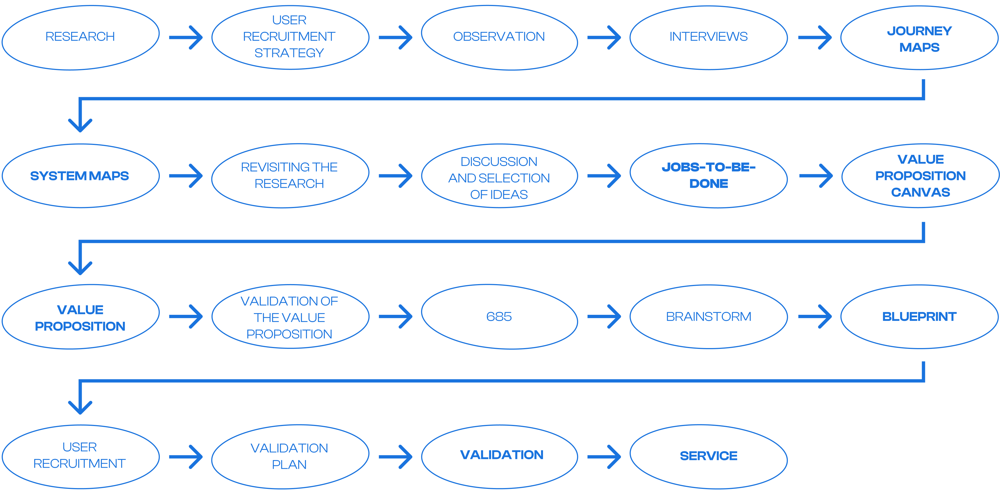
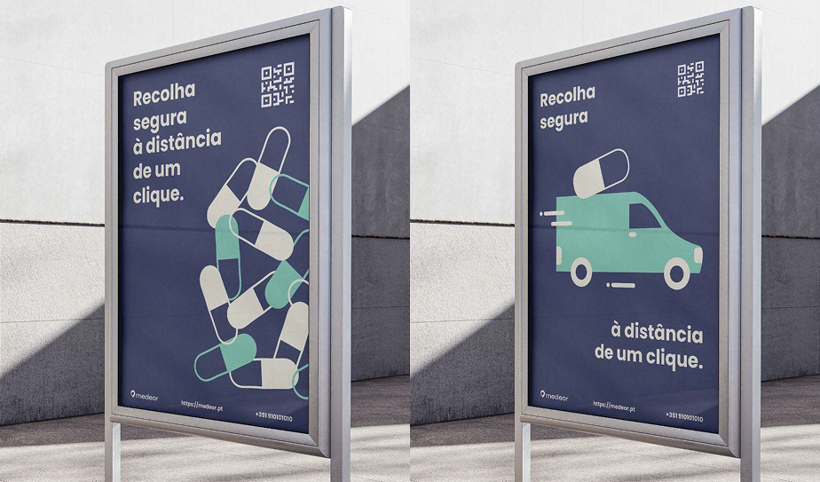
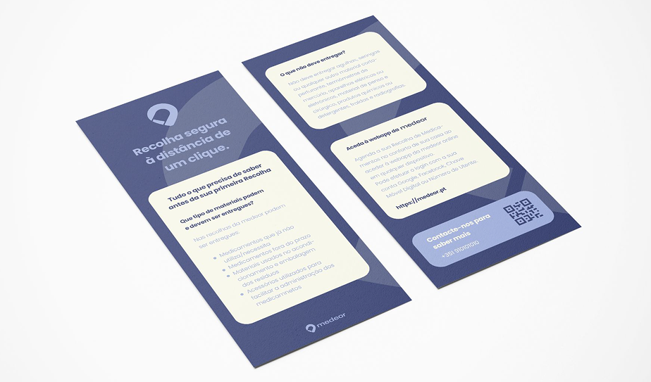
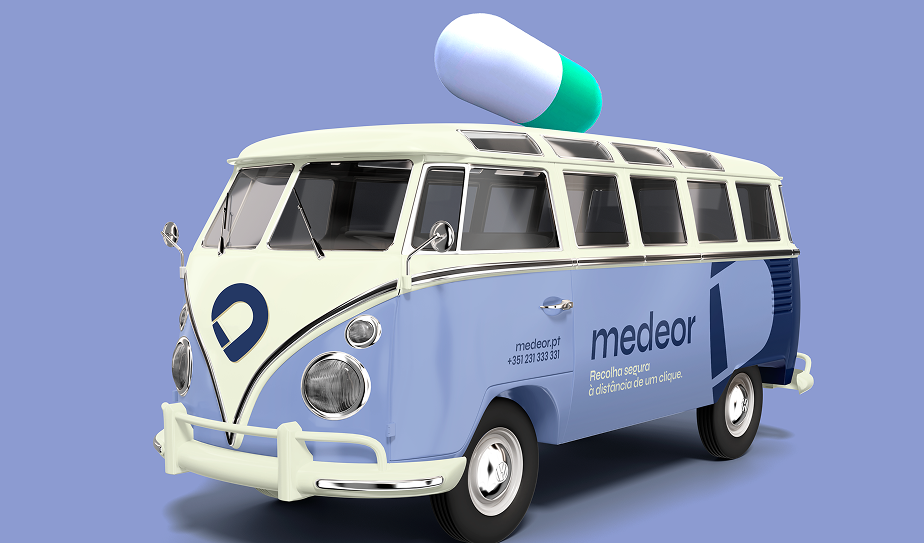
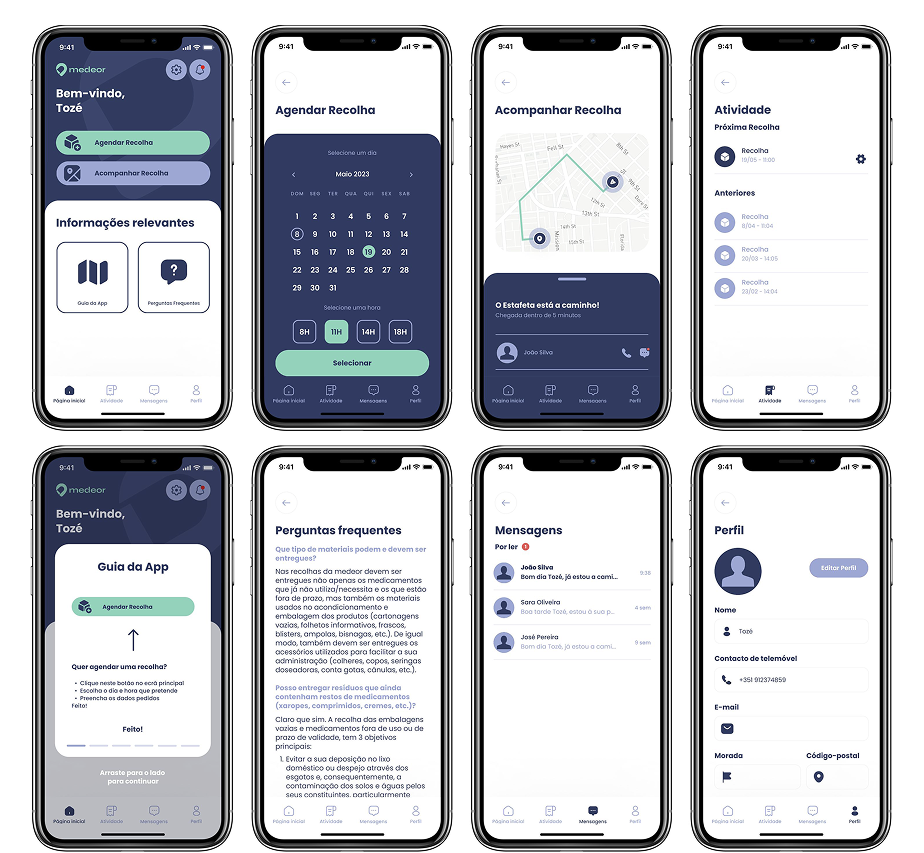

Medeor
The impact of end-of-life pharmaceuticals on public health and the environment is a problem that exists primarily because of the users who consume these by-products. As such, we designed a service that addresses and improves this issue, either by raising awareness or by facilitating the process.
The solution is a specialized medication pickup service, available by scheduling an appointment through the webapp.
Process
The project started with research, through observation and interviews, to understand how people deal with medications they no longer need. The findings were organised in journey maps and system maps, and the research was revisited before ideas were discussed and selected. Jobs-to-be-done and the value proposition canvas defined the value proposition, which was then turned into a service blueprint.

Validation
In order to evaluate the service, we carried out the validation, consisting of the following steps and methods:
- Presentation of the Project Context
- Concept and objectives of the Service
- Presentation of the Blueprint
- Viewing of the Demo
- Display of posters and brochures
- Demonstration and explanation of the Webapp
Four family members and friends who fit the user segments of the problem were selected. Regarding the materials used, for the presentation of the service, we used printed posters and a cell phone to display the demo and demonstrate the functionalities of the webapp.
After the demonstration, we obtained positive results, with most participants wanting this project to become a reality in order to save time on travels. We received positive feedback regarding how easy it is to understand how the web app works, something that was considered before its development.
Final Service




Final Thoughts
Medeor shows what happens when a service is designed as a whole and not as a single screen. The webapp, the posters, the flyers and the pickup van tell the same story, from the first time someone sees the service in the street to the moment they schedule a pickup. Designing for two very different users, those who already know how to dispose of medications safely and those who know nothing about it, also kept the proposal simple: secure collection, just a click away. What I am most proud of is how well the service holds together, because every touchpoint makes the next step obvious.
Medeor was a university project developed as a team, and it taught me how much a service depends on the moments around the screen: how people find it, how they trust it and how they come back to it. Looking back, I would test earlier and with more people. I believe in being wrong early, and the validation session showed how much a service changes once real people use it. The lesson I take to the next project is to let research and testing, and not assumptions, decide the direction.